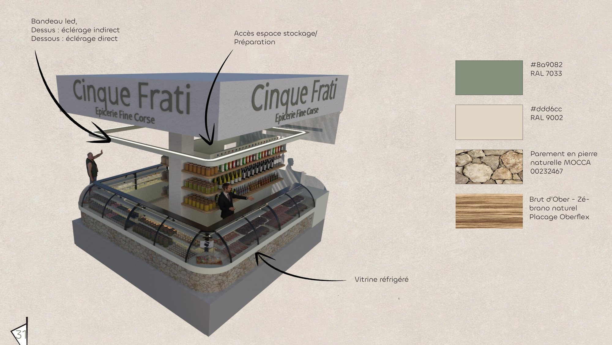

Une immersion portée
par les matériaux
L'ambiance ne cherche pas à en mettre plein la vue : elle enveloppe. Pierre locale, bois brut, enduits naturels : chaque matière raconte la Corse, sans superflu.


Fusion
Tradition et modernité, terroir et innovation, héritage et convivialité. Les matières brutes de l'île rencontrent les lignes nettes d'un stand de halle contemporaine.
Trois intentions guident le projet : l'échange authentique avec les producteurs, la dégustation sur place dans un écrin sobre mais raffiné, et une immersion subtile portée par les matériaux.

Un parcours en quatre temps
On entre par le présentoir et la vitrine réfrigérée, on s'attable au comptoir de dégustation, on se retire dans le salon premium. La préparation et le stockage restent en coulisse.



La palette
Parement en pierre naturelle
Le socle du stand, les murs des arches : la pierre sèche des villages.
Bois brut et hêtre
Étagères, tables de dégustation, assises : chaleur et patine.
Béton ciré
Une base neutre et contemporaine qui laisse parler les produits.
RAL 2001 · 7033 · 9002
Terracotta, vert maquis et grège, de l'enseigne aux banquettes.


Conception Baptiste Linet
Projet d'architecture intérieure, phase APD, 29 avril 2025. Épicerie fine et dégustation, Halles de Lyon Paul Bocuse, 102 cours Lafayette, Lyon 3e.